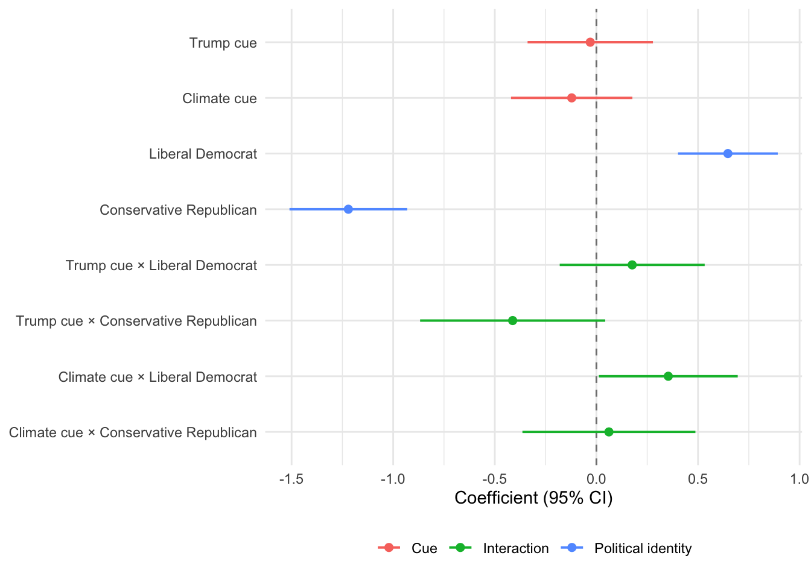
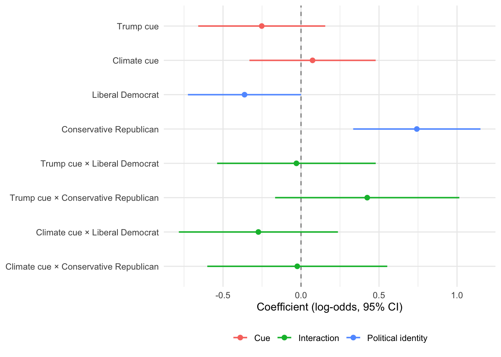
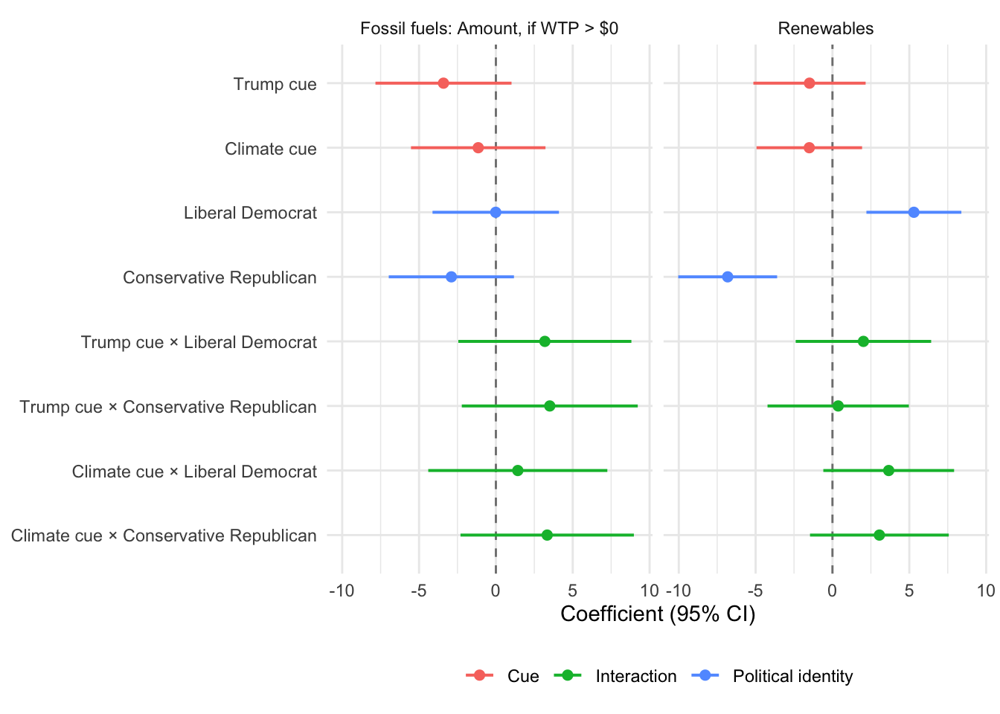

Cues, Partisanship, and Willingness-to-Pay for Energy
Abstract: While not as polarized as climate change, support for energy sources, most notably fossil fuels and renewables, have been shown to have stark partisan differences.
The issue of climate change is one of the most polarized issues politically in the United States. Democrats and liberals are concerned and support actions to address climate change, whereas Republicans and conservatives are less concerned and less supportive of climate policies. Shifting from fossil fuels sources of energy to renewables is needed to mitigate climate change, and polarization on energy sources has not matched the polarization on climate change. Yet, there are some differences, as Republicans tend to be more supportive of fossil fuels and less supportive of renewables, and vice versa for Democrats (Bergquist, Konisky, and Kotcher 2020; Hamilton et al. 2018; Hawes and Nowlin 2022). Additionally, in the last several years, Republicans have become more supportive of fossil fuels and less supportive of renewables (Kennedy and Kikuchi 2026).
Cues have been shown to drive public opinion on climate change and energy preferences. For example, partisan and elite cues played a significant role in shaping opinion on climate change (Merkley and Stecula 2021; Tesler 2018), and a climate change cue, or frame, can influence energy preferences (Feldman and Hart 2018). In light of recent rhetoric and actions on the part of the second Trump regarding fossil and renewables, it is possible that polarization among the public on energy sources may increase in response. Here, I explore how exposure to a Trump or climate cue, compared to no cue, influences the US public’s prioritize on fossil fuels versus renewables as well as their willingness-to-pay (WTP) for those energy sources.
In brief, the literature on WTP for energy finds that the public is responsive to price volatility for both fossil fuels and renewables (Cardella, Ewing, and Williams 2017), but in general are willing to pay more for renewable sources (Borchers, Duke, and Parsons 2007; Nkansah and Collins 2019). Additionally, US respondents expressed a WTP of ~$137 a year for energy research and development by the federal government aimed at reducing the use of fossil fuels (Li et al. 2009). Apart from price volatility other factors can influence the WTP for energy, including concern about the environmental impacts of energy (Knapp et al. 2020) and political beliefs (Aldy, Kotchen, and Leiserowitz 2012).
To examine the potential for polarization on energy preferences, I use a survey experiment to examine respondents’ prioritization of fossil fuels versus renewables as well as their willingness-to-pay (WTP) for those sources to generate electricity in response to a Trump cue or a climate change cue. Specifically, I surveyed 3113 US residents in April 2026, who were randomly assigned to receive one of three treatments, including a cue about Trump’s critique’s of renewable energy and his support for fossil fuels (n = 1049), a climate change cue that stated scientists recommend moving away from fossil fuels to renewables to address climate change (n = 1013), or a control condition with no cue (n = 1051).
Overall, I expect there to be both general and partisan shifts in preferences based on the cues. In general, those who receive the Trump cue will prioritize fossil and fuels and be willing to pay more, whereas those in the climate condition will prioritize renewable sources and be willing to pay more than those in the other conditions. For political beliefs, I expect conservative Republicans to be responsive to the Trump cue and liberal Democrats to be responsive to the climate cue in their energy preferences.
I fisrt examine how respondents chose to prioritize foosil fuels versus renewables. After receiving the cues, respondents were asked, on a 1 to 7 scale, if fossil fuels should be prioritized (= 1), fossil fuels and renewables should be prioritized equally (= 4), or renewable sources should be prioritized (= 7). The mean on the energy-priority scale was 5.17, indicating that respondents, on average, prioritized renewables. Next, I use OLS to examine the prioritization respondents gave to fossil fuels versus renewables as a function of the cue, their political beliefs, and the interaction between cues and political beliefs. In the following analysis I control for the respondents concern about the cost of energy. Energy affordability was a salient concern during the time data was collected. Indeed, in the survey respondents were asked, on a 0 to 10 scale, their overall concern about the cost of electricity, and the mean was 7.88, indicating a fair amount of concern. Finally, I control for several demographic variables, including age, male, white, education, and income. The results are shown in Figure 1; however, for clarity I only include results for the variables of interest and not the controls.
As expected, conservative Republicans were more likely to prioritize fossil fuels than renewables, with an estimated coefficient of -1.22 on the 1 to 7 scale. Liberal Democrats prioritized renewables at 0.65. In terms of the interactions, conservative Republicans who received the Trump cue were more likely to prioritize fossil fuels (b = -0.41, p = 0.076), whereas liberal Democrats in the climate condition where more likely to prioritize renewables (b = 0.35). However, the cues themselves had, on average, no effect on energy source priority compared to no cues.
Next, I asked respondents their WTP for fossil fuel and renewable sources using the Gabor-Granger method (e.g., Gabor and Granger 1966). Specifically, I first give respondents information about potential costs associated with each energy source. In the WTP for fossil fuels question, I noted that costs associated with renewable energy have decreased and they may need to pay more to use fossil fuels. For renewable sources respondents were told about the need to increase distribution. All respondents were asked their WTP for both sources, and the sources were presented in random order. To elict the maximum/minimum WTP, respondents were shown a random dollar amount between $1 and $46, in five-dollar increments, and asked if they would be WTP that amount extra per-month in their electricity bill. If they indicated yes they were shown a larger, random dollar-amount, and if they indicated no they were shown a smaller dollar-amount. This continues until they reach the $46-maximum or $1-minimum. Respondents who indicated no at $1 were coded with a WTP of 0.
Nearly half of respondents were not WTP any additional amount for fossil fuels, whereas 18.3 percent were WTP the max, $46 for renewables. Overall, the median WTP for fossil fuels was $1 with a mean of $8.33. For renewables the median WTP was $11 and the mean was $18.21. On average, respondents were willing to pay more for renewables than fossil fuels. Given the large share of respondents at $0 for fossil fuels, I model fossil-fuel WTP with a two-part hurdle model — a logit for whether a respondent has any positive WTP (Figure 2), and an OLS model for the dollar amount among those who do — and model renewables with OLS, consistent with the priority-scale model above; the results for the amount/renewables models are shown in Figure 3.


For fossil fuels, conservative Republicans were significantly more likely than the reference group to have any positive WTP (b = 0.74, log-odds scale), predicted at 68.3% in the control condition compared to 41.6% for liberal Democrats (b = -0.36, p = 0.050). Neither the Trump cue nor its interaction with conservative Republican identity significantly predicted participation or, among those with positive WTP, the dollar amount: predicted participation for conservative Republicans was 68.3% in the control condition versus 71.9% in the Trump cue, and the predicted amount conditional on paying something was $14.23 versus $14.32. Looking to renewables, liberal Democrats were willing to pay $5.30 more, on average, and in the climate condition the amount increased further by $3.66 (p = 0.092), for a total predicted willingness to pay of $26.17 for renewables. Conservative Republicans, however, were willing to pay $6.82 less for renewables, for a predicted total of $11.90.
The clean energy transition is needed to mitigate climate change, and public support is needed for the energy transition to complete. The results here show that support for fossil fuel and renewable energy sources is polarized, as measured both by prioritizing one source over the other as well as WTP for those sources. Additionally, a Trump cue made conservative Republicans more supportive of fossil fuels and a climate cue made liberal Democrats more supportive of renewables. However, respondents were, on average, more support of renewables in terms of both priority and WTP. Even conservative Republicans in the Trump cue had a WTP higher for renewables, $11.90, than fossil fuels, at $10.30.
References
Aldy, Joseph E., Matthew J. Kotchen, and Anthony A. Leiserowitz. 2012. “Willingness to Pay and Political Support for a US National Clean Energy Standard.” Nature Climate Change 2(8): 596–99.
Bergquist, Parrish, David M Konisky, and John Kotcher. 2020. “Energy Policy and Public Opinion: Patterns, Trends and Future Directions.” Progress in Energy 2(3): 032003.
Borchers, Allison M., Joshua M. Duke, and George R. Parsons. 2007. “Does Willingness to Pay for Green Energy Differ by Source?” Energy Policy 35(6): 3327–34.
Cardella, Eric, Bradley T. Ewing, and Ryan B. Williams. 2017. “Price Volatility and Residential Electricity Decisions: Experimental Evidence on the Convergence of Energy Generating Source.” Energy Economics 62: 428–37.
Feldman, Lauren, and P. Sol Hart. 2018. “Climate Change as a Polarizing Cue: Framing Effects on Public Support for Low-Carbon Energy Policies.” Global Environmental Change 51: 54–66.
Gabor, André, and C. W. J. Granger. 1966. “Price as an Indicator of Quality: Report on an Enquiry.” Economica 33: 43–70.
Hamilton, Lawrence C., Erin Bell, Joel Hartter, and Jonathan D. Salerno. 2018. “A Change in the Wind? US Public Views on Renewable Energy and Climate Compared.” Energy, Sustainability and Society 8(1): 11.
Hawes, Rachel, and Matthew C. Nowlin. 2022. “Climate Science or Politics? Disentangling the Roles of Citizen Beliefs and Support for Energy in the United States.” Energy Research & Social Science 85: 102419.
Kennedy, Brian, and Emma Kikuchi. 2026. “Americans’ Shifting Views on Energy Sources, Policy in 2026.” https://www.pewresearch.org/science/2026/04/03/americans-shifting-views-on-energy-issues/ (April 21, 2026).
Knapp, Lauren, Eric O’Shaughnessy, Jenny Heeter, Sarah Mills, and John M. DeCicco. 2020. “Will Consumers Really Pay for Green Electricity? Comparing Stated and Revealed Preferences for Residential Programs in the United States.” Energy Research & Social Science 65: 101457.
Li, Hui, Hank C. Jenkins-Smith, Carol L. Silva, Robert P. Berrens, and Kerry G. Herron. 2009. “Public Support for Reducing US Reliance on Fossil Fuels: Investigating Household Willingness-to-Pay for Energy Research and Development.” Ecological Economics 68(3): 731–42.
Merkley, Eric, and Dominik A. Stecula. 2021. “Party Cues in the News: Democratic Elites, Republican Backlash, and the Dynamics of Climate Skepticism.” British Journal of Political Science 51(4): 1439–56.
Nkansah, Kofi, and Alan R Collins. 2019. “Willingness to Pay for Wind Versus Natural Gas Generation of Electricity.” Agricultural and Resource Economics Review 48(1): 44–70.
Tesler, Michael. 2018. “Elite Domination of Public Doubts About Climate Change (Not Evolution).” Political Communication 35(2): 306–26.